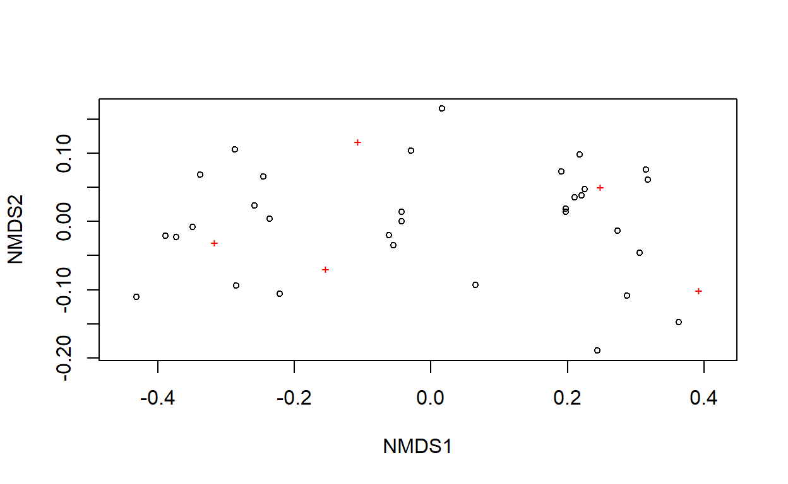
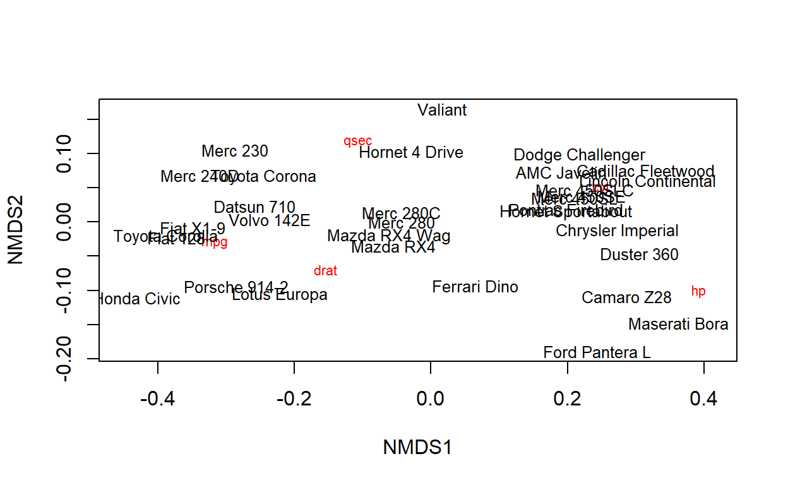
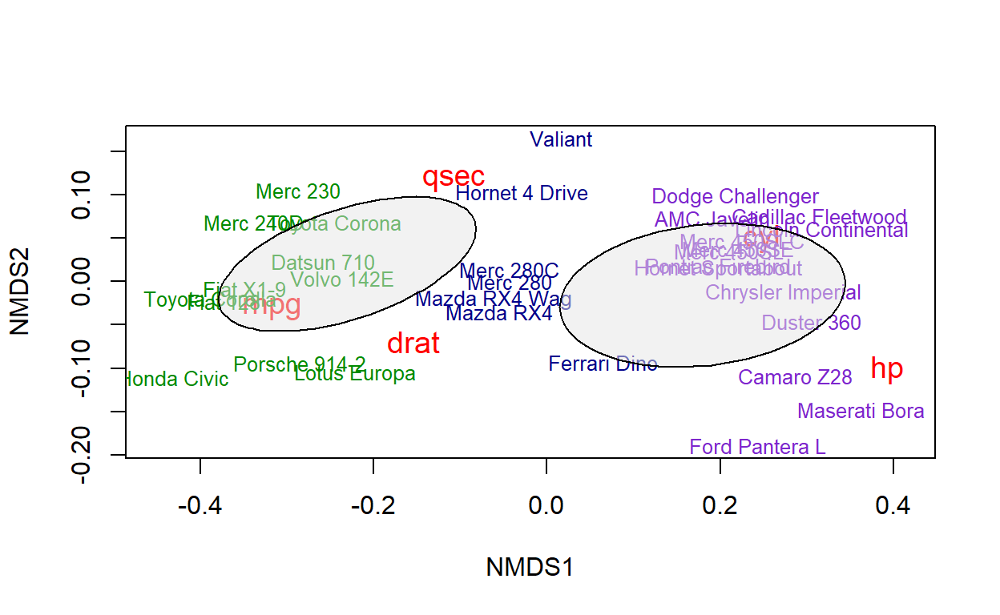
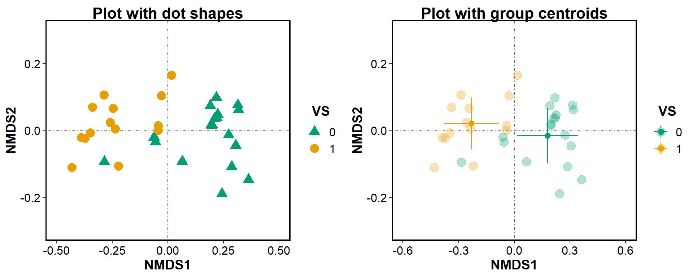
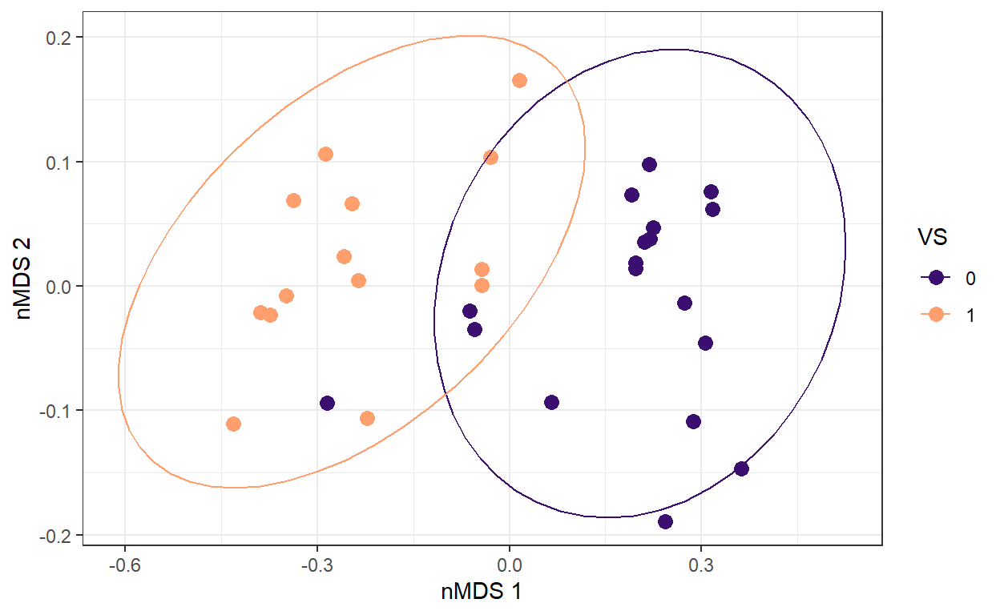
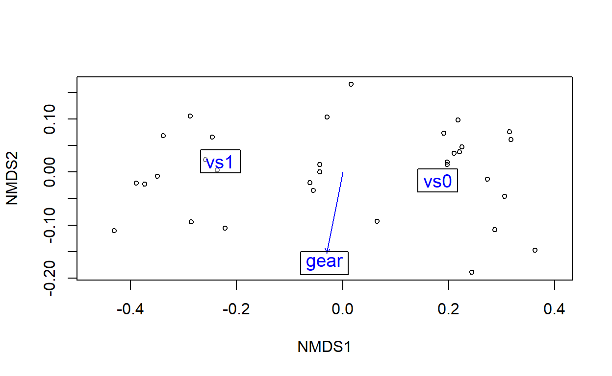
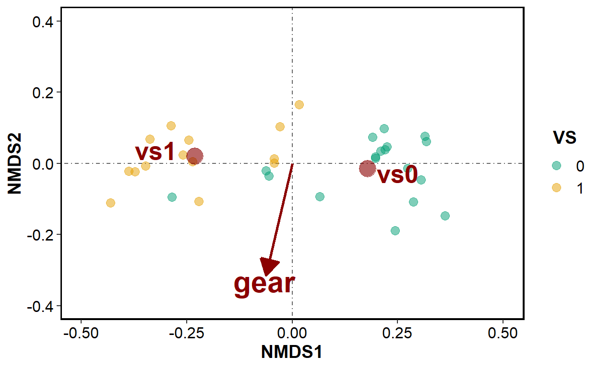

Learn how to run a non-metric Multidimensional Scaling (nMDS) in R, plot the results using the defaul plots or ggplot2, add species and explanatory variables to the plot, use groups centroids or run a PERMANOVA analysis.
This document is an example how to run a non-metric Multidimensional Scaling (nMDS) analysis in R using simple steps.
This technique is considered a distance-based ordination technique and it is based on a distance matrix. It can use multiple distance measures to build the matrix, which makes this technique quite flexible.
One of the most common uses of the nMDS is to explore community composition and turnover. However, this technique has a lot of potential. Among others, it can also be used to find the characteristics that differentiate our plots, to summarise and extract the main characteristics of our study object, -for example, vegetation structure-, or to reduce multidimensional data to a few dimensions for further analyses, that still account for the variability.
Although it is distance-based, the final output does not plot the “real” distances, but tries to keep the same rank order in the distances as observed in the original data, while constraining the data to the desired amount the axes.
Here we are going to show how to create a nMDS from our data and run some common analysis on it. During the process, we will also show some options how to plot the results.
For this example, we are going to use the mtcars dataset, to show the flexibility of this technique.
This dataset contains information on the performance of 32 cars measured in multiple ways. As with happens with biological data, each row is an observation (usually called “site” in ordinations) and each column is a variable on that observation (usually called “species”).
Disclaimer: Keep in mind that this document is meant as an introduction. More in depth information can be found in many great tutorials online.
We load the libraries and the data that we are going to use for the analysis.
The names of different objects in the nMDS are associated with the analyses of diversity: species for columns, sites for rows. We just need to keep in mind what the response variables in our data are and put them in the same format. In our case, the columns will be the characteristics of the cars and the rows will be different models. For the example, we are going to use some of the measurements as response variables to build our nMDS and the type of engine (vs) and number of gears (gear) as explanatory variables.
The measures we want to use to create the nMDS should be in columns, each row should be an observation.
mpg cyl disp hp drat wt qsec vs am gear carb
Mazda RX4 21.0 6 160 110 3.90 2.620 16.46 0 1 4 4
Mazda RX4 Wag 21.0 6 160 110 3.90 2.875 17.02 0 1 4 4
Datsun 710 22.8 4 108 93 3.85 2.320 18.61 1 1 4 1
Hornet 4 Drive 21.4 6 258 110 3.08 3.215 19.44 1 0 3 1
Hornet Sportabout 18.7 8 360 175 3.15 3.440 17.02 0 0 3 2
Valiant 18.1 6 225 105 2.76 3.460 20.22 1 0 3 1## extract response variables
mtcars_response <- mtcars %>%
select(mpg, hp, drat, qsec, cyl)
head(mtcars_response) mpg hp drat qsec cyl
Mazda RX4 21.0 110 3.90 16.46 6
Mazda RX4 Wag 21.0 110 3.90 17.02 6
Datsun 710 22.8 93 3.85 18.61 4
Hornet 4 Drive 21.4 110 3.08 19.44 6
Hornet Sportabout 18.7 175 3.15 17.02 8
Valiant 18.1 105 2.76 20.22 6The goal of an nMDS is to represent the original multivariate observations in a multidimensional space, using a reduced number of dimensions.
Ideally, we will use two dimensions. The nMDS is an iterative process that will try to locate our observations in the new space while trying to keeping the distances between them.
Then, the process regress the positions with the real distances and estimates a Stress value, or how much disagreement there is between the observed distances and the locations in the new space.
If stress is high, the algorithm will try to lower it by repositioning the points.
Rule of thumb: stress values below 0.1 are good, below 0.2 is ok. Higher values indicate a poor representition of our observations.
Some options for reducing the stress are increasing the number of dimensions (k), changing the initial configuration for the first points, of increasing the number of iterations (trymax).
# We build the distances with the desired index
mtcars_dist <- vegdist(mtcars_response, method = "gower")
# Then we run the nMDS with the selected number of dimensions using either the distance matrix or the response and distance index
mtcars_NMDS <- metaMDS(mtcars_response, distance = "gower",
k = 2) # The number of desired dimensionsWe check the stress to see how good the model is:
In this case the stress looks very good, as the points are mostly overlapping the line.
The basic plot shows the location of our observations (rows) in the new two-dimensional space as dots and the variables (columns) as red crosses.
plot(mtcars_NMDS)
We can also plot just the names of the columns or just the observations:
# create empty plot
ordiplot(mtcars_NMDS,type="n")
# add variables
orditorp(mtcars_NMDS,display="species", col = "red", air = 0.01)
# add observations
orditorp(mtcars_NMDS,display="sites", cex = 0.8, air = 0.01)
Or use an additional grouping variable to create clusters. In this example, let’s use the vs to plot the clusters, and we will also use cyl to colour our points:
# create colour vector
my_colours <- mtcars %>%
mutate(colour = case_when(
cyl == 4 ~ "green4",
cyl == 6 ~ "blue4",
cyl == 8 ~ "purple3"))
# create empty plot
ordiplot(mtcars_NMDS,type="n")
# add variables
orditorp(mtcars_NMDS,display="species",col="red", cex = 1.2, air=0.01)
# add observations coloured based on "cyl"
orditorp(mtcars_NMDS,display="sites",
col=my_colours$colour,
air=0.01,cex=0.8)
ordiellipse(mtcars_NMDS, groups = mtcars$vs,
draw="polygon", col="grey90", label=F)
Now that we have our nMDS, we can extract the point scores for further analysis or for plotting with ggplot:
# get point positions for our observations
point_scores <- as.data.frame(scores(mtcars_NMDS)$sites)
# get the variable positions
sp_scores <- wascores(x = mtcars_NMDS$points, w = mtcars_response, expand = TRUE)Now we can add any relevant data to this locations, as they keep the same order as in the original dataset:
point_scores$vs <- mtcars$vsAnd now we can plot the data in many different ways.
First we create a base plot:
plot_base <-
ggplot(point_scores, aes(x = NMDS1, y = NMDS2)) +
scale_colour_manual(values = c("#009E73", "#E69F00")) +
geom_vline(xintercept = 0, linetype = 4, linewidth = 0.5, colour = "grey40") +
geom_hline(yintercept = 0, linetype = 4, linewidth = 0.5, colour = "grey40") +
labs(x = "NMDS1", colour = "VS", shape = "VS", y = "NMDS2") +
ylim(-0.3, 0.3) Plot of the points with different shapes and colours for the explanatory factor, add centroids of grouping variables:
plot_left <-
plot_base +
geom_point(size = 4, aes(colour = as.factor(vs), shape = as.factor(vs))) +
scale_shape_manual(values = c(17, 16)) +
ggtitle("Plot with dot shapes") +
xlim(-0.5, 0.5)
# Get centroids of grouping variables
groups <- point_scores %>%
group_by(vs) %>%
summarise(centroid_x = mean(NMDS1),
centroid_y = mean(NMDS2),
sd_x = sd(NMDS1),
sd_y = sd(NMDS2))
plot_right <-
plot_base +
geom_point(size = 4, aes(colour = as.factor(vs)), alpha = 0.3) +
geom_pointrange(data = groups, aes(x = centroid_x, y = centroid_y,
ymin = centroid_y - sd_y, ymax = centroid_y + sd_y,
col = as.factor(vs))) +
geom_pointrange(data = groups, aes(x = centroid_x, y = centroid_y,
xmin = centroid_x - sd_x, xmax = centroid_x + sd_x,
col = as.factor(vs))) +
ggtitle("Plot with group centroids") +
xlim(-0.6, 0.6)
gridExtra::grid.arrange(plot_left, plot_right, nrow = 1)
Add whiskers and give shapes based on cyl:
or create ellipses for our groups:
plot_ellipses <- ggplot(point_scores, aes(x = NMDS1, y = NMDS2, colour = as.factor(vs))) +
geom_point(size = 3) +
scale_colour_viridis_d(option = "magma", begin = 0.2, end = 0.8, name = "VS") +
stat_ellipse(data = point_scores, aes(x = NMDS1, y = NMDS2),
level = 0.95) +
theme_bw() +
xlab("nMDS 1") +
ylab("nMDS 2")
plot_ellipses
Important note: An NMDS is mostly a visualization technique, not a real representation of distances. Correlation of variables wiht the axes can be used for plotting but to asses real effects we need to run statistical tests on the data, like a permanova test for categorical variables, or a Mantel test for continuous variables. Other ordination techniques like PCA, PCoA or CA can be used for testing effects directly on the axes.
To add the explanatory variables to the plot, we use the envfit() function from vegan.
As we are not testing the significance of the relationship, we set the permutations to 0.
The two types of explanatory variables will give us different results:
Continuous variables can be plotted using their correlation with the axes, thus it will give us a vector direction
Categorical variables can be plotted using their centroid in the nMDS space, thus we will get the coordinates of the centroid
mtcars_2 <- mtcars %>%
mutate(vs = as.factor(vs))
env_fit <- envfit(mtcars_NMDS ~ vs + gear,
data = mtcars_2,
permutations = 0)
env_fit
***VECTORS
NMDS1 NMDS2 r2
gear -0.19504 -0.98080 0.6435
***FACTORS:
Centroids:
NMDS1 NMDS2
vs0 0.1792 -0.0158
vs1 -0.2305 0.0203
Goodness of fit:
r2
vs 0.5859The resulting vectors and factors can be overlapped to the plot:
plot(mtcars_NMDS, display = "sites")
# add fitted variables
plot(env_fit, cex=1.2, bg = rgb(1, 1, 1, 0.5))
Or plot with ggplot:
## extract coordinates of variables and make them fit into the plot
cont_fit <- as.data.frame(scores(env_fit, "vectors")) #* ordiArrowMul(env_fit)
cat_fit <- as.data.frame(scores(env_fit, "factors")) #* ordiArrowMul(env_fit)
plot_fit <- plot_base +
geom_point(data = point_scores, aes(colour = as.factor(vs)),
size = 3, alpha = 0.5) +
# add vector
geom_segment(data = cont_fit, aes(x = 0, y = 0, xend = NMDS1*0.4, yend = NMDS2*0.4),
arrow = arrow(angle = 30, length = unit(0.5,"cm"), type = "closed"),
linewidth = 1, colour = "darkred") +
# add vector label
geom_text(data = cont_fit, aes(x = NMDS1*0.42, y = NMDS2*0.42),
colour = "darkred", fontface = "bold", size = 8,
label = row.names(cont_fit)) +
# add factor
geom_point(data = cat_fit, aes(x = NMDS1, y = NMDS2),
shape = "circle", size = 6, alpha = 0.6, colour = "darkred") +
# add factor labels
geom_text(data = cat_fit, aes(x = NMDS1*1.4, y = NMDS2*1.8),
label = row.names(cat_fit),
colour = "darkred", fontface = "bold", size = 7) +
xlim(c(-0.5,0.5)) +
ylim(c(-0.4,0.4))
plot_fit
We can also use this approach to plot the weights or influence of our species (variables) in the axes. This approach works mostly with ordination techniques that keep the real distances between observations. Once again we can use this approach to plot potential effects, although the real effects should be tested statistically:
# plot with species
bio_fit <- envfit(mtcars_NMDS, mtcars_response, permu = 0)
bio_fit
#Get the vectors for bioenv.fit
species_plotting <- scores(bio_fit,display=c("vectors"))
species_plotting <- as.data.frame(species_plotting)
plot_with_sp <- ggplot(point_scores, aes(x = NMDS1, y = NMDS2, colour = as.factor(vs))) +
geom_point(size = 3) +
geom_segment(data = species_plotting, aes(x = 0, y = 0, xend = NMDS1, yend = NMDS2),
arrow = arrow(length = unit(0.2, "cm")), color = "#00CC33") +
geom_text(data = species_plotting,
aes(NMDS1 * 1.1, NMDS2*1.1, label = rownames(species_plotting)),
color = "#00CC33", size = 5) +
stat_ellipse(data = point_scores, aes(x = NMDS1, y = NMDS2, fill = as.factor(vs)),
type = "norm", geom = "polygon",
level = 0.95, alpha = 0.2) +
scale_colour_viridis_d(option = "inferno", begin = 0.2, end = 0.8,
name = "VS", aesthetics = c("fill", "colour")) +
labs(xlab = "nMDS 1", ylab = "nMDS 2", title = 'nMDS with species loads') +
theme_bw() +
theme(
plot.title = element_text(size = 16, colour = "black", face = "bold"))
plot_with_spWe can statistically test if an explanatory variable has a significant effect in our data using a permanova analysis (Permutation-based Multivariate Analysis of Variance), which is the equivalent of an ANOVA for the multidimensional data. Therefore, it tests if there are significant differences among groups. Permanova analysis is based on centroids and dispersion. Therefore, we need to test for homogeneity in the dispersion before running the analysis. The data we need is the distance matrix for our response data and the explanatory variables to test.
Here, we do an example with the variable vs.
To test the homogeneity of variances we are going to use the betadisp() and permutest() on our matrix of distances (mtcars_dist).
## We use our table with the coordinates and the variables and the explanatory variables
head(point_scores) NMDS1 NMDS2 vs
Mazda RX4 -0.05484159 -0.03497974 0
Mazda RX4 Wag -0.06175361 -0.02018406 0
Datsun 710 -0.25863908 0.02389372 1
Hornet 4 Drive -0.02919500 0.10399042 1
Hornet Sportabout 0.19734681 0.01424406 0
Valiant 0.01611045 0.16546607 1## Now we test the variance against the explanatory variable
betadisp_mtcars <- betadisper(mtcars_dist, point_scores$vs)
boxplot(betadisp_mtcars, xlab = "groups")permutest(betadisp_mtcars)
Permutation test for homogeneity of multivariate dispersions
Permutation: free
Number of permutations: 999
Response: Distances
Df Sum Sq Mean Sq F N.Perm Pr(>F)
Groups 1 0.00011 0.0001106 0.0105 999 0.931
Residuals 30 0.31691 0.0105637 The variance in our samples is homogeneous, we can proceed with the permanova analysis, that we run using the function adonis2 from {vegan}.
adonis2(mtcars_dist ~ vs, data = point_scores)Permutation test for adonis under reduced model
Terms added sequentially (first to last)
Permutation: free
Number of permutations: 999
adonis2(formula = mtcars_dist ~ vs, data = point_scores)
Df SumOfSqs R2 F Pr(>F)
vs 1 1.14154 0.57094 39.92 0.001 ***
Residual 30 0.85788 0.42906
Total 31 1.99942 1.00000
---
Signif. codes: 0 '***' 0.001 '**' 0.01 '*' 0.05 '.' 0.1 ' ' 1The results show a clear significant effect of the VS type on the performance of the cars.